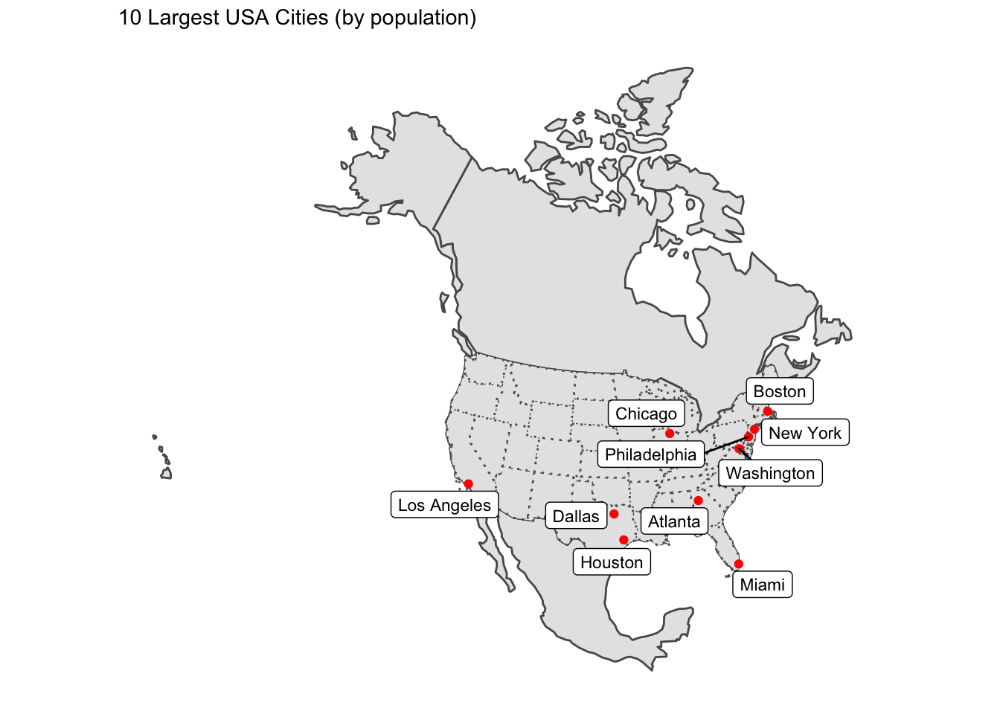
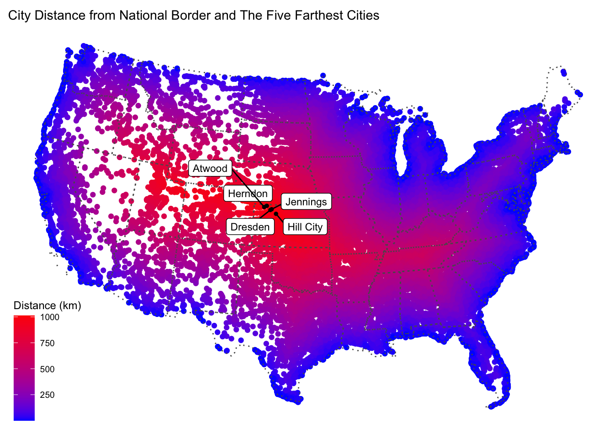
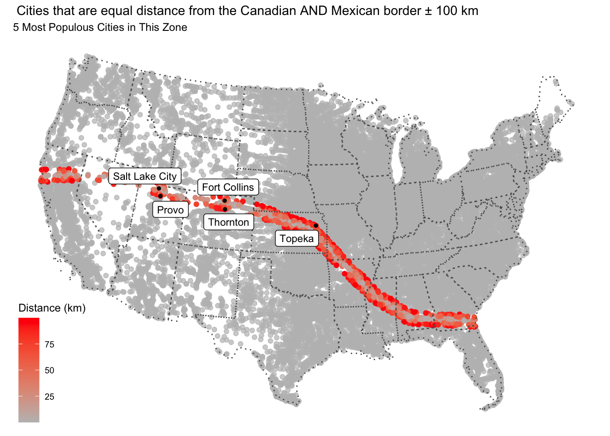

# SPDS
library(tidyverse)
library(sf)
library(units)
# Data
library(USAboundaries)
library(rnaturalearthdata)
library(rnaturalearth)
# Visualization
library(gghighlight)
library(ggrepel)
library(knitr)
source = "/Users/xingxin/Github/geog176a-summer-2020-lab1/"In this lab, 4 main skills are covered:
eqdc = '+proj=eqdc +lat_0=40 +lon_0=-96 +lat_1=20 +lat_2=60 +x_0=0 +y_0=0 +datum=NAD83 +units=m +no_defs'Description of this projection based on the parameters:
state = USAboundaries::us_states(resolution = "low") %>%
filter(!state_name %in% c("Puerto Rico", "Alaska", "Hawaii")) %>%
st_transform(eqdc)country = rnaturalearth::countries110
country_sf = st_as_sf(country) %>%
filter(admin %in% c("United States of America", "Mexico", "Canada")) %>%
st_transform(eqdc)city = read_csv(paste(source,"uscities.csv",sep = "")) %>%
select(city, state_name, county_name, population, lat, lng)## Parsed with column specification:
## cols(
## city = col_character(),
## city_ascii = col_character(),
## state_id = col_character(),
## state_name = col_character(),
## county_fips = col_double(),
## county_name = col_character(),
## county_fips_all = col_character(),
## county_name_all = col_character(),
## lat = col_double(),
## lng = col_double(),
## population = col_double(),
## density = col_double(),
## source = col_character(),
## military = col_logical(),
## incorporated = col_logical(),
## timezone = col_character(),
## ranking = col_double(),
## zips = col_character(),
## id = col_double()
## )city_sf = st_as_sf(city, coords = c("lng", "lat"), crs = 4326) %>%
filter(!state_name %in% c("Puerto Rico", "Alaska", "Hawaii"))
city_eqdc = st_transform(city_sf, eqdc) # Union States: state boundaries are resolved
usa_geom = state$geometry
usa_u_ml = st_union(usa_geom) %>%
st_cast("MULTILINESTRING")
# Combine States: state boundaries are preserved
usa_c_ml = st_combine(usa_geom) %>%
st_cast("MULTILINESTRING")
# Distance to US Border
city_eqdc = city_eqdc %>%
mutate(dist_border = st_distance(city_eqdc, usa_u_ml)) %>%
mutate(dist_border = units::set_units(dist_border, "km"))
# Five Cities to US Border
city_eqdc %>% select(city,state_name, dist_border) %>% slice_max(dist_border, n = 5) %>%
st_drop_geometry() %>%
knitr::kable(caption = "Five Cities Farthest from US Border",
col.names = c("City", "State", "Distance to US Border")) | City | State | Distance to US Border |
|---|---|---|
| Dresden | Kansas | 1012.317 [km] |
| Herndon | Kansas | 1007.750 [km] |
| Hill City | Kansas | 1005.147 [km] |
| Atwood | Kansas | 1004.734 [km] |
| Jennings | Kansas | 1003.646 [km] |
# The distance of each city to the nearest state boundary
city_eqdc = city_eqdc %>%
mutate(dist_state = st_distance(city_eqdc, usa_c_ml)) %>%
mutate(dist_state = units::set_units(dist_state, "km"))
# Five Cities to US State
city_eqdc %>% select(city,state_name, dist_state) %>% slice_max(dist_state, n = 5) %>%
st_drop_geometry() %>%
knitr::kable(caption = " Five Cities Farthest from State Border",
col.names = c("City", "State", "Distance to State Border"))| City | State | Distance to State Border |
|---|---|---|
| Lampasas | Texas | 308.9216 [km] |
| Bertram | Texas | 302.8190 [km] |
| Kempner | Texas | 302.5912 [km] |
| Harker Heights | Texas | 298.8125 [km] |
| Florence | Texas | 298.6804 [km] |
# The distance of each city to the Mexican border
city_eqdc = city_eqdc %>%
mutate(dist_Mexico = st_distance(city_eqdc, filter(country_sf, admin == "Mexico"))) %>%
mutate(dist_Mexico = units::set_units(dist_Mexico, "km"))
# Five Cities to Mexican
city_eqdc %>% select(city,state_name, dist_Mexico) %>% slice_max(dist_Mexico, n = 5) %>%
st_drop_geometry() %>%
knitr::kable(caption = " Five Cities Farthest from Mexican Border",
col.names = c("City", "State", "Distance to Mexican Border"))| City | State | Distance to Mexican Border |
|---|---|---|
| Caribou | Maine | 3250.334 [km] |
| Presque Isle | Maine | 3234.570 [km] |
| Calais | Maine | 3134.348 [km] |
| Eastport | Maine | 3125.624 [km] |
| Old Town | Maine | 3048.366 [km] |
# The distance of each city to the Canadian border
city_eqdc = city_eqdc %>%
mutate(dist_Canada = st_distance(city_eqdc, filter(country_sf, admin == "Canada"))) %>%
mutate(dist_Canada = units::set_units(dist_Canada, "km"))
# Five Cities to Canada
city_eqdc %>% select(city,state_name, dist_Canada) %>% slice_max(dist_Canada, n = 5) %>%
st_drop_geometry() %>%
knitr::kable(caption = " Five Cities Farthest from Canadian Border",
col.names = c("City", "State", "Distance to Canadian Border"))| City | State | Distance to Canadian Border |
|---|---|---|
| Guadalupe Guerra | Texas | 2206.455 [km] |
| Sandoval | Texas | 2205.641 [km] |
| Fronton | Texas | 2204.784 [km] |
| Fronton Ranchettes | Texas | 2202.118 [km] |
| Evergreen | Texas | 2202.020 [km] |
# 10 largest cities
largest_cities10 = city_eqdc %>%
slice_max(population, n = 10)
ggplot() +
geom_sf(data = country_sf) +
geom_sf(data = state, lty = 3, size = .5) +
geom_sf(data = largest_cities10, size = 1.5,color = "red") +
ggrepel::geom_label_repel(
data = largest_cities10,
aes(label = city, geometry = geometry),
stat = "sf_coordinates",
size = 3) +
labs(title = "10 Largest USA Cities (by population)",
x = " ",
y = " ") +
ggthemes::theme_map() 
# 5 farthest cities
farthest_cities5 = city_eqdc %>%
slice_max(dist_border, n = 5)
ggplot() +
geom_sf(data = city_eqdc, aes(col= as.numeric(dist_border))) +
scale_color_gradient(low = 'blue', high = "red", name = "Distance (km)") +
geom_sf(data = state, size = 0.5,lty = 3, fill = "NA",) +
geom_sf(data = farthest_cities5, size = 1, color = "black") +
ggrepel::geom_label_repel(
data = farthest_cities5,
aes(label = city, geometry = geometry),
stat = "sf_coordinates",
size = 3) +
labs(title = "City Distance from National Border and The Five Farthest Cities",
x = " ",
y = " ") +
ggthemes::theme_map() 
farthest_cities5_state = city_eqdc %>%
slice_max(dist_state, n = 5)
ggplot() +
geom_sf(data = city_eqdc, aes(col= as.numeric(dist_state))) +
scale_color_gradient(low = 'blue', high = "red", name = "Distance (km)") +
geom_sf(data = state, size = 0.5,lty = 3, fill = "NA",) +
geom_sf(data = farthest_cities5_state, size = 1, color = "black") +
ggrepel::geom_label_repel(
data = farthest_cities5_state,
aes(label = city, geometry = geometry),
stat = "sf_coordinates",
size = 3) +
labs(title = "City Distance from Nearest State Border and The Five Farthest Cities",
x = " ",
y = " ") +
ggthemes::theme_map() city_eqdc = city_eqdc %>%
mutate(diff = abs(dist_Canada - dist_Mexico))
equal_cities3 = city_eqdc %>%
filter(as.numeric(diff) < 100 ) %>%
slice_max(population, n = 5)
ggplot() +
geom_sf(data = city_eqdc, aes(col= as.numeric(diff))) +
scale_color_gradient(low = 'grey', high = "red", name = "Distance (km)") +
gghighlight(as.numeric(diff)<100) +
geom_sf(data = state, size = 0.5,lty = 3, fill = "NA",) +
geom_sf(data = equal_cities3, size = 1, color = "black") +
ggrepel::geom_label_repel(
data = equal_cities3,
aes(label = city, geometry = geometry),
stat = "sf_coordinates",
size = 3) +
labs(title = " Cities that are equal distance from the Canadian AND Mexican border ± 100 km",
subtitle = "5 Most Populous Cities in This Zone",
x = " ",
y = " ") +
ggthemes::theme_map() 
# How many cities are in this 100 mile zone? (100 miles ~ 160 kilometers)
# How many people live in a city within 100 miles of the border?
# What percentage of the total population is in this zone?
zone = city_eqdc %>%
mutate(total_pop = sum(population)) %>%
filter(as.numeric(dist_border) <= 160) %>%
summarise(number_cities = n(), sum_pop = sum(population), percent = 100 * (sum_pop/total_pop[1])) %>%
st_drop_geometry()
knitr::kable(zone,
caption = "Cities Within 100 Miles of State Border",
col.names = c("Number of Cities", "Number of People", "Percent of Population(%)"))| Number of Cities | Number of People | Percent of Population(%) |
|---|---|---|
| 12283 | 259935815 | 65.43979 |
The ACLU states that “Roughly two-thirds of the United States’ population lives within the 100-mile zone—that is, within 100 miles of a U.S. land or coastal border. That’s about 200 million people.”
(1)The total number of people live in a city within 100 miles of the border calculated above is:
It’s about 260 million, which is higher than the ACLU’s estimation.
(2)The percent Percent of Population calculated above is:
which is close to the ACLU’s estimation.
pop_zone10 = city_eqdc %>%
filter(as.numeric(dist_border) <= 160) %>%
select(city, population) %>%
slice_max(population, n = 10)
ggplot() +
geom_sf(data = city_eqdc, aes(col= as.numeric(dist_border))) +
scale_color_gradient(low = 'orange', high = "darkred", name = "Distance (km)") +
gghighlight(as.numeric(city_eqdc$dist_border) <= 160) +
geom_sf(data = state, size = 0.5,lty = 3, fill = "NA",) +
geom_sf(data = pop_zone10, size = 1, color = "black") +
ggrepel::geom_label_repel(
data = pop_zone10,
aes(label = city, geometry = geometry),
stat = "sf_coordinates",
size = 3) +
labs(title = " Cities within the 100 Mile Zone",
subtitle = "10 Most Populous Cities in This Zone",
x = " ",
y = " ") +
ggthemes::theme_map()